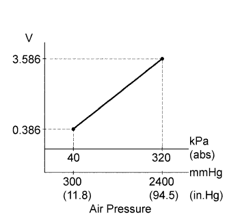
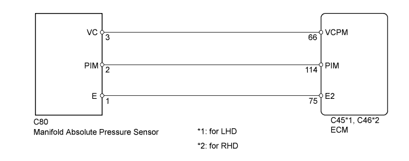
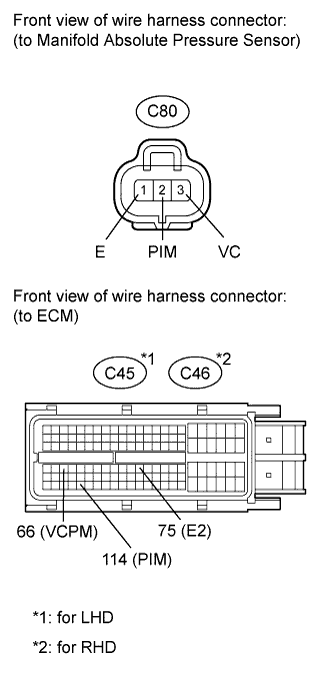
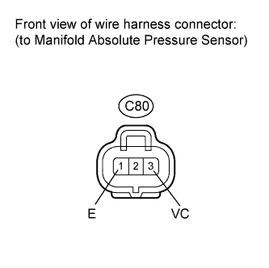

DTC P0105 Manifold Absolute Pressure / Barometric Pressure Circuit |
DTC P0107 Manifold Absolute Pressure / Barometric Pressure Circuit Low Input |
DTC P0108 Manifold Absolute Pressure / Barometric Pressure Circuit High Input |

| DTC Detection Drive Pattern | DTC Detection Condition | Trouble Area |
| After engine is started, race engine for 1 second | After the engine is started, condition (a) continues for more than 2.0 seconds (1 trip detection logic): (a) Manifold absolute pressure sensor voltage is 0.1 V or less, or 4.8 V or more. |
|
| DTC Detection Drive Pattern | DTC Detection Condition | Trouble Area |
| After engine is started, race engine for 1 second | After the engine is started, condition (a) continues for more than 2.0 seconds (1 trip detection logic): (a) Manifold absolute pressure sensor voltage is 0.1 V or less. |
|
| DTC Detection Drive Pattern | DTC Detection Condition | Trouble Area |
| After engine is started, race engine for 1 second | After engine is started, condition (a) continues for more than 2.0 seconds (1 trip detection logic): (a) Manifold absolute pressure sensor voltage is 4.8 V or more. |
|
| DTC No. | Data List |
| P0105 | MAP |
| P0107 | |
| P0108 |
| Intake Manifold Pressure | Malfunction |
| Approximately 0 kPa |
|
| 250 kPa (1875 mmHg, 73.8 in.Hg) or higher |
|

| 1.READ VALUE USING INTELLIGENT TESTER (MANIFOLD ABSOLUTE PRESSURE) |
Connect the intelligent tester to the DLC3.
Turn the engine switch on (IG) and turn the tester on.
Enter the following menus: Powertrain / Engine / Data List / MAP.
Read the value.
|
| ||||
|
| ||||
| 2.CHECK HARNESS AND CONNECTOR (MANIFOLD ABSOLUTE PRESSURE SENSOR - ECM) |
 |
Disconnect the manifold absolute pressure sensor connector.
Disconnect the ECM connector.
Measure the resistance according to the value(s) in the table below.
| Tester Connection | Condition | Specified Condition |
| C80-2 (PIM) - C45-114 (PIM) | Always | Below 1 Ω |
| C80-3 (VC) - C45-66 (VCPM) | Always | Below 1 Ω |
| C80-1 (E) - C45-75 (E2) | Always | Below 1 Ω |
| Tester Connection | Condition | Specified Condition |
| C80-2 (PIM) - C46-114 (PIM) | Always | Below 1 Ω |
| C80-3 (VC) - C46-66 (VCPM) | Always | Below 1 Ω |
| C80-1 (E) - C46-75 (E2) | Always | Below 1 Ω |
| Tester Connection | Condition | Specified Condition |
| C80-2 (PIM) or C45-114 (PIM)) - Body ground | Always | 10 kΩ or higher |
| C80-3 (VC) or C45-66 (VCPM) - Body ground | Always | 10 kΩ or higher |
| C80-1 (E) or C45-75 (E2) - Body ground | Always | 10 kΩ or higher |
| Tester Connection | Condition | Specified Condition |
| C80-2 (PIM) or C46-114 (PIM)) - Body ground | Always | 10 kΩ or higher |
| C80-3 (VC) or C46-66 (VCPM) - Body ground | Always | 10 kΩ or higher |
| C80-1 (E) or C46-75 (E2) - Body ground | Always | 10 kΩ or higher |
|
| ||||
| OK | |
| 3.CHECK ECM TERMINAL VOLTAGE (VC TERMINAL) |
 |
Disconnect the manifold absolute pressure sensor connector.
Measure the voltage according to the value(s) in the table below.
| Tester Connection | Switch Condition | Specified Condition |
| C80-3 (VC) - C80-1 (E) | Engine switch on (IG) | 4.5 to 5.5 V |
|
| ||||
| OK | |
| 4.REPLACE MANIFOLD ABSOLUTE PRESSURE SENSOR |
Replace the manifold absolute pressure sensor (Click here).
| NEXT | |
| 5.CHECK WHETHER DTC OUTPUT RECURS |
Connect the intelligent tester to the DLC3.
Clear the DTCs (Click here).
Turn the engine switch off.
Turn the engine switch on (IG) and turn the tester on.
After the engine is started, race the engine for 1 second.
Enter the following menus: Powertrain / Engine / DTC.
Read the DTCs.
| Display (DTC output) | Proceed to |
| P0105, P0107 and/or P0108 | A |
| No output | B |
|
| ||||
| A | |
| 6.REPLACE ECM |
Replace the ECM (Click here).
|
| ||||
| 7.REPAIR OR REPLACE HARNESS OR CONNECTOR |
| NEXT | |
| 8.CONFIRM WHETHER MALFUNCTION HAS BEEN SUCCESSFULLY REPAIRED |
Connect the intelligent tester to the DLC3.
Clear the DTCs (Click here).
Turn the engine switch off.
Turn the engine switch on (IG) for 3 seconds and turn the tester on.
After the engine is started, race the engine for 1 second.
Confirm that the DTC is not output again.
Enter the following menus: Powertrain / Engine / Utility / All Readiness.
Input DTC P0105, P0107 and/or P0108.
Check that STATUS is NORMAL. If STATUS is INCOMPLETE or UNKNOWN, race the engine for 1 minute and then idle the engine for 5 minutes.
| NEXT | ||
| ||